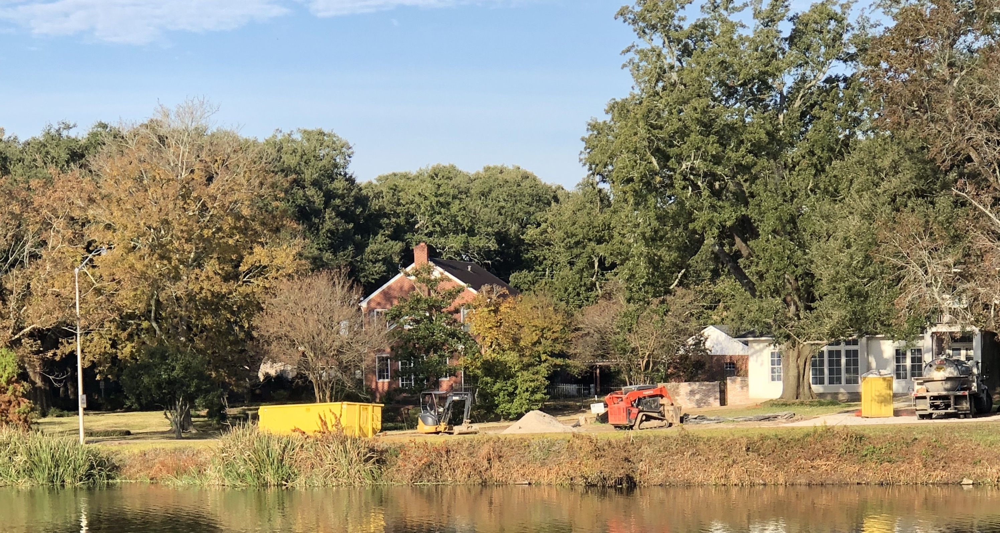

<!doctype html>
<html lang="en">
    <head>
        <meta charset="utf-8">
        <meta name="viewport" content="width=device-width, initial-scale=1.0, maximum-scale=1.0, user-scalable=no">

        <title>Sounds Aware</title>
        <link rel="stylesheet" href="./css/reveal.css">
        <link rel="stylesheet" href="./assets/style.css" id="theme">
        <link rel="stylesheet" href="./css/highlight/zenburn.css">
        <link rel="stylesheet" href="./css/print/paper.css" type="text/css" media="print">


    </head>
    <body>

        <div class="reveal">
            <div class="slides"><section  data-markdown><script type="text/template">

# Sounds Aware: 
## A Mobile App for Raising Awareness of Environmental Sound
</script></section><section  data-markdown><script type="text/template">


<aside class="notes"><p>The idea for Sounds Aware came while walking with dog Lucy around the lakes by my house. When I first started walking her I would listen to podcast or music on headphones for the entire walk because I found it difficult to fill the time with my own thoughts. I would hear the sounds of nature occasionally coming through my music and this made me want to take the head phones out and just listen.</p>
</aside></script></section><section  data-markdown><script type="text/template">


<aside class="notes"><p>The problem came when I tried to do that and realized there, while this is a beautiful bit of nature, it is by peoples houses and some major roads.</p>
</aside></script></section><section  data-markdown><script type="text/template">


<aside class="notes"><p>So in addition the the birds I could also hear the noise of lawnmowers, home construction and cars driving by. This made me want the best of both worlds. I wanted to create a system that would play music if it heard &#39;noise&#39; and play nothing if it heard nothing. This I thought would help me focus my attention more on nature and less on how much I didn&#39;t want to hear the noise. This inspired Sounds Aware.</p>
</aside></script></section><section  data-markdown><script type="text/template">

</script></section><section  data-markdown><script type="text/template">
Sounds Aware is a web application that runs on a smart- phone and uses machine learning to detect  human-made sound (anthrophony) and masks it with ambient music as a user walks around their environment. 
</script></section><section  data-markdown><script type="text/template">
<!-- .slide: data-background="assets/nature.jpg" id="background-image" -->

> To what extent might the technologies of com- munication, art and entertainment serve as ‘pros- theses’ that would provide us with experiences of wilderness that would not only enrich our human identity but help us to preserve and expand the domain of the non-human world?

<aside class="notes"><p>Composer David Dunn poses an inspirational question:
The goal of Sounds Aware is to bring the user’s awareness to the geophonic and biophonic soundscape, which is often so masked by noise pollution that it has fallen out of aware- ness for many of us. Sounds Aware seeks to shift the user’s concept of nature to something that has no starting or end- ing point; it is all around us. The app brings awareness by focusing attention on the environment. Because of the pre- dominance of eye culture [3], our reliance on seeing rather than listening as a primary means of sensing the world, it is</p>
<p>Licensed under a Creative Commons Attribution 4.0 International License (CC BY
4.0). Attribution:  owner/author(s).
Web Audio Conference WAC-2019, December 4–6, 2019, Trondheim, Norway.
Oc   2019 Copyright held by the owner/author(s).</p>
<p>a lot to ask of a person who might be uninterested in acous- tic ecology to “just listen” to their environment. But, if you give them a tool that urges listening in the quieter places, where the natural world will be more audible, there is a bet- ter chance of them engaging with those sounds because the app focused their perception. Sounds Aware is a means of technologically mediated “ear cleaning,” as described by R. Murray Schafer in Ear Cleaning: Notes for an Experimental Music Course [13].
A 2011 World Health Organization (WHO) report found that “there is overwhelming evidence that exposure to en- vironmental noise has adverse effects on the health of the population [10].” Sounds Aware shifts a users attention away from noise pollution and to nature, which may help mitigate adverse health effects caused by noise pollution. Psycholo- gist Stephen Kaplan found that stress reduction can be aided by the experience of the natural environment by providing a ‘restorative environment’ that reduces the fatigue caused by directed attention [8].    Kaplan  did not mention sound directly, but a recent study by Eleanor Ratcliffe et al [12] has extended his research to show that certain bird sounds may provide restorative benefits.  While a reduction in en- vironmental noise at the source would be the best way to solve noise pollution, masking the noise is a stopgap solu- tion. A masking solution has been implemented by several pro jects [9,  15]  but not yet with a mobile device.  Sounds Aware implements a similar idea but with a mobile phone.</p>
<ol>
<li>MOTIVATION</li>
</ol>
<p>2.1   Soundscape
R. Murray Schafer suggests that we should listen to the environment as a musical composition. He describes urban and rural soundscapes as lo-fi and hi-fi. A rural landscape is hi-fi because there is a low noise level and allows one to hear more clearly.  When in lo-fi (urban) soundscapes we are deal- ing with a lot of sound masking and getting less discernible aural information [14].    Sounds Aware brings attention to that urban noise by masking it with music, possibly reduc- ing its negative effects as described by the WHO report [10]. The music of Sounds Aware and Schafer’s ‘environment as musical composition’ combine as a duet to create a new un- heard work.
Through  our  personal  listening  devices  (smartphones,</p>
<p>iPods etc.)   many of us try to block out the environment with music.  Perhaps this is because we mostly hear noise pollution? This tendency makes Sounds Aware a viable tool for focusing attention because we are already used to making the choice to use personal listening devices.  This is a tool that lets you continue to do that but brings your attention to the nature you might otherwise miss [18].
What could be gained besides a reverence for nature from Sounds Aware ? Many of us use music as a way of blocking out silence.  Rather  than listening to the “silence,” which might give us a chance to be silent in our minds, we fill up the space with music [18].   Perhaps Sounds Aware can re- contextualize nature sounds to be engaging enough to pay attention to, to make the city soundscape seem uninteresting compared to the natural soundscape. Sounds Aware satisfies both ideas. By focusing the users’ attention on environmen- tal sounds, they will hopefully gain a greater appreciation for those sounds and then seek to design their world in a way such that my app is unnecessary.  This redesign could take the form of urban planning that takes into account research from soundscape ecology [11].
2.2  Audio walks
Sounds Aware  is further classified as an audio walk be- cause it is a soundwalk mediated by technology.  Johanna Steindorf describes audio walks as “experiments and works that combine walking and listening to a mediated sound- scape over headphones [16].”  That an audio walk takes place using headphones is important because it adds “a second layer  of private  sound to any place and situation,  there- fore transforming or enhancing the current spatial  experi- ence [16].” Sounds Aware mediates the public space through remediation of noise. The unique part of this audio walk is that the user is meant to be more aware when the composed ambient music is off. It is almost like a negative audio walk.
2.3   Ubiquitous  listening
Urban dwellers are already often walking around with headphones in, trying to mediate the acoustic environment. Iain Chambers writes about the first entirely private listen- ing experience, which provides a starting point for my app, the Walkman. This private experience that many of us first experienced with a Walkman, then CD players, is now ex- perienced with mobile phones:</p>
<p>With the Walkman strapped to our bodies we confront what Murray Schafer in his book The Tuning of the World calls a “soundscape,” a soundscape that increasingly represents a muta- ble collage: sounds are selected, sampled, folded in and cut up by both the producers (DJs,  rap crews, dub masters, recording engineers) and the consumers (we put  together  our personal play lists,  skip some tracks,  repeat others, turn up the volume to block out the external soundtrack or flip between the two). Each listener/player se- lects and rearranges the surrounding soundscape, and, in constructing a dialog with it, leaves a trace in the network [7].</p>
<p>Chambers notes that the music people were listening to was collage based, as was the way they were listening to it. He surmised that the way people would listen while walking around would change depending on the sounds of the outside</p>
<p>environment.  The sounds around the listener became part of the collage of the sounds playing on the Walkman.</p>
<ol>
<li>RELATED  WORK
The Quiet Walk [1],   by Alessandro Altavilla  and Atau Tanaka,  is locative audio walk artwork for explorations of the urban landscape, where the goal is to find the quietest place in an urban location.  The app notifies users if the surrounding sounds are too high.  It also records the GPS locations of quiet places that are found so that the user can view a sound map of their walk. This might be the pro ject with the closest concept to Sounds Aware,  but there are some key differences. The Quiet Walk only records loudness levels and does not categorize sounds. Because of that, a loud anthrophonic sound is treated the same as a sound not human-made, which probably produced false positives. This more intelligent system was proposed in the conclusion and was probably not tried because of technological limitations of the time.
Hazzard, Benford, and Burnett  created  Ambient Walk [4],   a mobile application that  encourages mindful walking through sonification of biophysical data.  The app plays am- bient music dependent on users breathing patterns and the pace of walking. The authors intend for the music to keep a user aware of their ‘balancing status’  between walking and breathing. The intentions of Ambient Walk are very similar to Sounds Aware, though its intention is to raise the user’s awareness  of one’s own mindfulness, instead of the sound- scape.
There are many examples of smartphone apps that  use GPS to teach the user about a historical sub ject.  Sounds Aware does not use GPS but has similarities to apps that do. Walk With Me is a site-specific musical smartphone app that uses GPS to create geo-tagged markers to give form to a composition.  This app is like Sounds Aware because it uses a microphone to sense the environment, but Walk With Me takes the step to alter that environment and turn those environmental sounds into part of the composition in a more conscious way.  Specific places are chosen for their auditory characteristics and the piece is composed by giving certain locations specific acousitc qualities.  The proximity to this geo-tagged location alters the signal processing, increasing the intensity as a user gets closer. Walk With Me does not have the same effect as Sounds Aware in raising awareness of a soundscape because it alters the soundscape instead of reframing it [17].</li>
</ol>
</aside></script></section><section  data-markdown><script type="text/template">4.	USER INTERACTION

<!-- TODO: Demo here -->
<a href="http://walking.netlify.com" target="_blank">Demo</a>

<!-- show  -->
Sounds Aware  is accessed by going to https://walking. netlify.com in a web browser on a smartphone. It requires Internet access to download the default data set. After that, the app will work offline, so it is appropriate for various net- work conditions.  Headphones are required so that the mi- crophone on the phone does not pick up the music playback. Headphones with a microphone are preferred so that if the user wants, they can put their phone in their pocket while walking.
When a user first opens the application, they will see it guess the surrounding sounds based on a pre-trained data set. When assured that the microphone is working, the user can then start the music by clicking the toggle switch (see Figure 1a). The music now responds to what the surround-
 


ing sounds. The user can adjust the listening sensitivity of the microphone to their liking to match the acoustic envi- ronment if it is particularly quiet or noisy. After testing the success of the system in interpreting the user’s environment, the user can now add their own training data (see Figure 1b). For this, the user will select a sound category such as a car. Then the user will wait for a car to drive by and then record it by clicking the record toggle. This will make the system more accurate in listening to the user’s specific environment. Users are not currently able to add their own sound category tags.

1.   DESIGN

5.1  Technical design
Sounds Aware is built with Tone.js, a Web Audio API framework. There are a few downsides to web-based apps, such as cross-browser compatibility issues with microphone input, but a web app was chosen because a user might be more likely to try it if they do not have to download an app. Each user starts  off with an author-defined database  of tagged sounds. To create this database each recording made was tagged (see Table  1) with a general sound category. Those sounds were then placed into broader categories of origin.  This allowed the composition to treat sounds from different sources—geophony, anthrophony, and biophony— differently.  Table 2 shows the default data set.  Footsteps were treated as silence because the system needed to work
 

 

Figure 2: Mapping of tag category to music


could have been added to this data set to make tags more accurate,  but for this proof of concept the most important tags were accurate enough for users to hear a result in the sounds.
The app uses machine learning to identify sounds. The al- gorithm used is k-nearest neighbor. A Mel-Frequency Cep- stral Coefficients (MFCC) audio feature was used to com-
pare sounds, implemented by Meyda.js1 , a JavaScript fea-
ture extraction library. Using Meyda.js allowed the process- ing to be done on the client, allowing Sounds Aware to work offline when necessary.
5.2   Composition  design
The musical composition of Sounds Aware  is influenced by ambient music. Synthesized sounds were used that would not be too jarring to jump in and out of and did not have an obvious beginning or ending. This type of synthesized sound blends in with the surrounding acoustic environment as a composition. The synthesized sounds are simple frequency modulation synthesis with reverb and delay effects.  They are tuned to just intervals so they are more likely to coincide with tunings in nature, influenced by Aeolian practices [2] and La Monte Young [6].
The app maps the loudness2 of the acoustic environment
to the amplitude of the ambient composition (see Figure 2). The previous 200 loudness values are averaged and the am-
 
when  a  user  was  moving.    If  they  had  been  added  to  the	 	
 
anthrophony the system  would only work if the user was still and silent; this was a trade-off to allow for user mobil- ity,  allowing them to find various soundscapes.  More data
 
1 https://meyda.js.org/audio-features
2 A  perceptual  feature  from  https://meyda.js.org/audio-
features.html
 
 

 
Figure 3: Sounds a user noticed in their neighborhood

 

Figure 4: Noticed anthrophonic sounds


plitude ramps to a given value over one second for signal smoothing. If Sounds Aware hears an anthrophonic sound, the amplitude is faded up to -3 dB. If it hears a geophonic sound, the amplitude of the geophonic sound is mapped onto the synthesized sounds amplitude, creating a wind chime ef- fect.   Geophonic sounds also affect the modulation index and harmonicity of the frequency modulation synthesis, cre- ating a variety of timbres depending on the character of the current external soundscape. If a biophonic sound is recog- nized, the amplitude of the ambient wash is faded down to
-59 dB, which is perceptibly silent when listened to in an urban environment.

1.    EVALUATION
The study begins with a survey designed to understand prior knowledge of environmental  sounds and likelihood of interest in the pro ject.  Seven users took part in the study. The participants were anonymous and no demographic data was collected.  The survey was conducted through a web- based question form. The participants  were found through a university class and word of mouth.
Users were first asked, “When walking in your neighbor- hood do you notice a greater percentage of human-produced (anthrophony) sounds over biological (biophony), geophys- ical (geophony)?” Most users noticed anthrophonic sounds and slightly  less noticed geophonic and biophonic sounds (see Figure 3).  When asked the question, “Which anthro- phonic sounds in your neighborhood are the most notice- able?” users noted cars and construction the most (see Fig- ure 4).
 
Figure 5: Exit Survey


For the exit survey,  a number of questions were asked about how the app worked for the users and if it changed their awareness.   The following questions were asked and represented in bar graph form (see Figure 5):

•  Do you often walk around your neighborhood with headphones in?

• If there was a system to playback music when anthro- phonic sound was detected but stop the music when biophonic or geophonic sound was detected, would you use it?

•  Would it be more useful if you could pick the music, or even listen to a podcast?

•  Did the app respond fast enough or accurately enough to cover up anthrophonic sounds?

•  When the app did not detect any anthrophonic sounds, so did not play music, were you more likely to notice the geophonic and biophonic sounds?

• If the app was not accurate at first were, you able to train it with more data to make it more accurate to your soundscape?

•  If you did try to train the system, did you find enjoy- ment in the act of training it?

• If you trained the app, did the act of training change the  way  you listened to  the  environmental sounds around you?

•  Did you notice a change in mood or thought processes after having your attention drawn away from the noise and to the sounds of nature?

•  Did you enjoy the composer-created sounds?

• If not, would the application be experienced better by being able to replace noise with your own music?

One issue with the study might be that a number of par- ticipants actually do not often walk around with headphones in. I suspect that in a much more urban environment than Baton Rouge, Louisiana, many more people would report walking while using headphones.  Most participants were positive about the chance to try the app and also would like a way to use their own media with it.  Five out of the seven users also thought the app responded quickly enough
 

to be meaningful and the musical response matched closely with the current natural soundscape. All of the participants responded that they were likely to notice geophonic and bio- phonic sounds when there was a silence, which is a positive finding. Only one user responded that they were not able to retrain the app to make it more sensitive to certain tags and most enjoyed training the system and changed their listening during training.

1.   CONCLUSIONS AND FUTURE WORK
Sounds Aware is a web application meant to increase a user’s awareness of the biophonic and geophonic sounds in their urban environment. In limited studies, users reported increased awareness of environmental sounds. Having people use it over a longer period of time, and then surveying with more questions, would be a future avenue of research.
The app could have been made more robust by using na- tive phone capabilities.  A future version of Sounds Aware
could be built using Capacitor3 , a native bridge for cross-
platform mobile apps.   This would allow the targeting  of multiple platforms (web, iOS, Android) with the same code base and more robust access to native  functionality such as the microphone. Usability improvements could be made such as the ability to add user defined tags so a user can record unique sounds in their location.
Other future work includes using an edge TPU computing board, such as the Coral Dev Board4 , to do machine learning
computation on.  An edge TPU (Tensor Processing Unit) would allow for more powerful machine learning capabilities in a portable form factor. This will make the system much more accurate and be able to recognize many more types of sounds. A study will be done to find out if this extra piece of hardware provides more benefits than costs.

1.    REFERENCES
[1]  A. Altavilla and A. Tanaka. The quiet walk: Sonic memories and mobile cartography. In Proceedings of the 9th sound and music computing conference, pages
157–162, Copenhagen, Denmark, 2012.
[2]  R. Bandt. Taming the wind: Aeolian sound practices in australasia. Organised Sound, 8(2).
[3]  J.-E. Berendt. The Third Ear: On Listening to the
World. H. Holt, New York, 1992.
[4]  S. Chen, J. Bowers, and A. Durrant. ’Ambient walk’: a mobile application for mindful walking with sonification of biophysical data. In Proceedings of the
2015 British HCI Conference, pages 315–315, Lincoln, United Kingdom, 2015. ACM.
[5]  David Dunn. Wilderness as Reentrant Form:
Thoughts on the Future of Electronic Art and Nature.
Leonardo, (4):377, 1988.
[6]  K. Gann. La monte young’s the well-tuned piano.
Perspectives of New Music, 31(1):134–162, 1993.
[7]  Iain Chambers, Christoph Cox, and Daniel Werner.
The Aural Walk. In Audio Culture: Readings in Modern Music, pages 129–133. Bloomsbury Academic, revised edition edition, 2017.
[8]  S. Kaplan. The restorative benefits of nature: toward an integrative framework. In: Journal  of Environmental Psychology., 15:169–182, 1995.
3 https://capacitor.ionicframework.com/
4 https://coral.withgoogle.com/products/dev-board/
 

[9]  G. Licitra, M. Cobianchi, and L. Brusci. Artificial soundscape approach to noise pollution in urban areas. Proceedings of the Proceedings of
INTER-NOISE, page 11, 2010.
[10] W. H. Organization. Burden of disease from environmental noise:  quantification of healthy life
years lost in Europe. World Health Organization, 2011. [11] B. C. Pijanowski, L. J. Villanueva-Rivera, S. L.
Dumyahn, A. Farina, B. L. Krause, B. M. Napoletano,
S. H. Gage, and N. Pieretti. Soundscape ecology: the science of sound in the landscape. BioScience,
61(3):203–216, 2011.
[12] E. Ratcliffe, B. Gatersleben, and P. T. Sowden. Bird sounds and their contributions to perceived attention restoration and stress recovery. Journal  of Environmental Psychology, 36:221–228, Dec 2013.
00146.
[13] R. Schafer. Ear Cleaning: Notes for an Experimental
Music Course. Clark & Cruickshank, 1969. [14] R. M. Schafer. The soundscape: Our sonic
environment and the tuning of the world. Simon and
Schuster, 1993.
[15] D. Steele, E. Bild, C. Tarlao, and C. Guastavino.
Soundtracking the public space: Outcomes of the musikiosk soundscape intervention. International journal of environmental research and public health,
16(10), 2019.
[16] J. Steindorf. Walk-Along with a Mediated Presence: The Audio Walk as a Mobile Method. Wi: Journal  of Mobile Media, 2017.
[17] R. Van Rijswijk and J. Strijbos. Sounds in Your Pocket:  Composing Live Soundscapes with an App. Leonardo Music Journal,  pages 27–29, 2013.
[18] K. Wrightson. An introduction to acoustic ecology.
Soundscape: The journal of acoustic ecology,
1(1):10–13, 2000.
</script></section></div>
        </div>

        <script src="./lib/js/head.min.js"></script>
        <script src="./js/reveal.js"></script>

        <script>
            function extend() {
              var target = {};
              for (var i = 0; i < arguments.length; i++) {
                var source = arguments[i];
                for (var key in source) {
                  if (source.hasOwnProperty(key)) {
                    target[key] = source[key];
                  }
                }
              }
              return target;
            }

            // Optional libraries used to extend on reveal.js
            var deps = [
              { src: './lib/js/classList.js', condition: function() { return !document.body.classList; } },
              { src: './plugin/markdown/marked.js', condition: function() { return !!document.querySelector('[data-markdown]'); } },
              { src: './plugin/markdown/markdown.js', condition: function() { return !!document.querySelector('[data-markdown]'); } },
              { src: './plugin/highlight/highlight.js', async: true, callback: function() { hljs.initHighlightingOnLoad(); } },
              { src: './plugin/zoom-js/zoom.js', async: true },
              { src: './plugin/notes/notes.js', async: true },
              { src: './plugin/math/math.js', async: true }
            ];

            // default options to init reveal.js
            var defaultOptions = {
              controls: true,
              progress: true,
              history: true,
              center: true,
              transition: 'default', // none/fade/slide/convex/concave/zoom
              dependencies: deps
            };

            // options from URL query string
            var queryOptions = Reveal.getQueryHash() || {};

            var options = {};
            options = extend(defaultOptions, options, queryOptions);
        </script>


        <script>
          Reveal.initialize(options);
        </script>
    </body>
</html>
